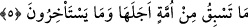

5. Hiçbir millet, ecelinin önüne geçemez ve onu geciktiremez.
Gerek helâk edilmiş gerekse helâk edilmemiş “hiçbir millet” kendisi için yazılmış
“ecelinin önüne geçemez” yâni vakti gelmeden önce helâk edilmez, “ve onu
geciktiremez.” bu vakitten geri kalmaz. ‘Bu vakitten geri kalmaz’ ifâdesi hazfedilmiştir.
Çünkü bu hem bilinmektedir, hem de âyet sonlarının uyumu için böyle yapılmıştır.
Burada istif’âl sıygasının kullanılmış olması, böyle bir şeyi istedikleri halde ondan âciz
olduklarını hissettirmek içindir.
et-Te’vîlâtü’n-Necmiyye’de der ki: “Hiçbir millet ecelinin önüne geçemez” yâni
helâkine sebeb olacak şey kendisinden sâdır (zâhir) olmadan, nefsi de bütün hakları
boşa çıkaracak hazlara tam anlamıyla ermeden helâk olmaz “ve onu geciktiremez.”
azâb ve helâke sebeb olacak davranışları tam olarak işledikten sonra bir an bile geri
kalmaz.
Sa‘dî şöyle der:
Bir yol ele getir ve sulhu iste
Bir şefâatçi kopar ve bir özür söyle
Son nefeste ‘eman’ demek bir işe yaramaz
Zamanın devriyle ömür kadehin dolduğu zaman
Şu halde aklı başında olana düşen, durmadan kötülüğü emreden (emmâre) nefsini
tezkiye etmeye ve onun azgın sıfatlarını yok etmeye çalışmaktır.
Mâlumdur ki dünyâ küçük bir köy, âhiret ise bir büyük şehir gibidir. Âfetlerden de
ancak büyük çoğunluğa (sevâd-ı a‘zam) yönelenler kurtulabilir. Çünkü büyük çoğunluk,
herkes için güven mahallidir. Kişi oraya giderken ölse dahi Allah ona ecir verir. Ancak
geri kalıp cesed köyünü îmar etmeye uğraşıp dünyâ ve dünyâlıklarla meşgul olanlar
helâk olanlarla birlikte helâk olurlar.
Her nefsin ancak gelip çattığı zaman helâk olacağı bir eceli vardır. Bu ecel de meçhul
olduğundan dâimâ hazırlıklı olmak, her an ölümü hatırlamak, emeli kısaltmak,
davranışları düzeltmek ve tembellikten kurtulmak gerekir.
Ebû Saîd Hudrî (r.a.)’den rivâyet edilir ki: Üsâme b. Zeyd, Zeyd b. Sâbit’ten bir ay
vâde ile yüz dinara bir câriye satın almıştı. Bunun üzerine Rasûlullah (s.a.)’in şöyle
buyurduğunu duydum: “Bir ay vâde ile (câriye) satın alan Üsâme’nin emelinin
uzunluğu sebebiyle durumuna hayret etmiyor musunuz? Nefsim kudret elinde olana
yemin olsun ki ben gözlerimi açıp kapadığım süre zarfında bile göz kapaklarımın
tekrar bir araya gelmeden Allah’ın rûhumu alıvereceğini düşünüyorum. Bir yerimi
kaldırdığım zaman rûhum kabzedilmeden yere indiremeyeceğimi düşünüyorum. Yine
ağzıma bir lokma aldığım zaman onu yutamayıp ölümden ötürü boğazıma
düğümlenivereceğini düşünüyorum.”